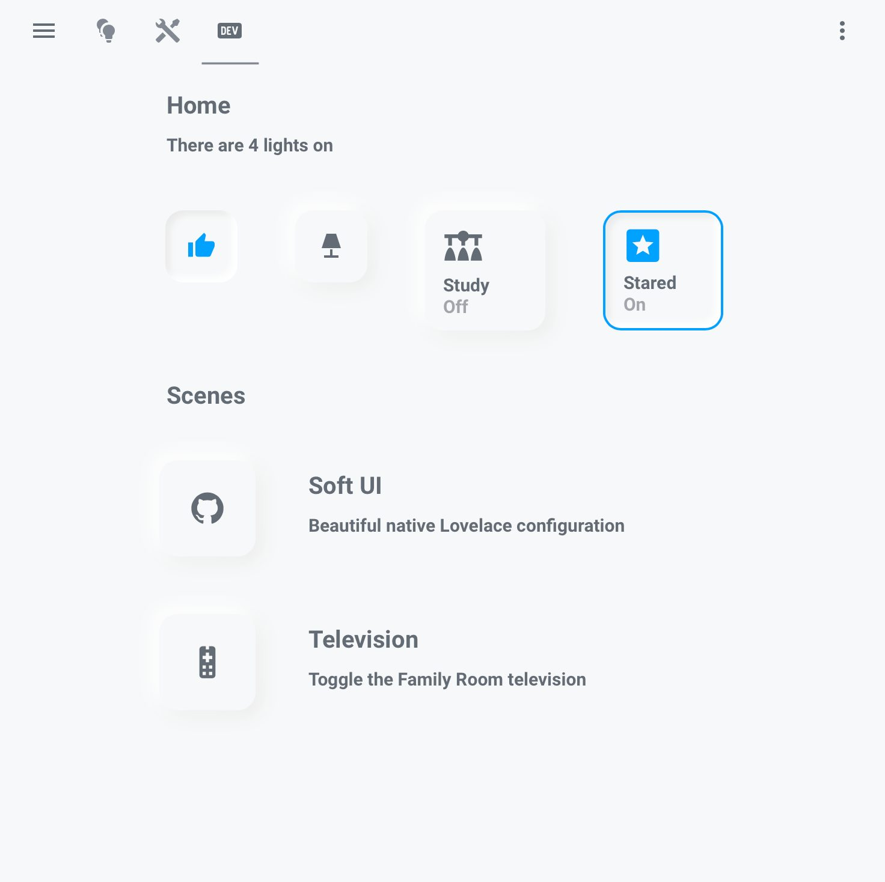

References / Software / 238
Lovelace Soft UI for Home Assistant
A December 2019 theme that brought the style to real smart-home dashboards, in a very faint form.
- Source
- qiz-li/lovelace-soft-ui on GitHub
- Creator
- qiz-li (copyright “ilzq”)
- Made
- 2019–2026 (repository created 27 December 2019; now archived)
- Style
- Neumorphism (agent-proposed, not yet reviewed by a person)
- Moods
- Calm, quiet, minimal
- Evidence
- Inspected the repository’s own
images/screenshot.png(3349 × 1796), which shows the light and dark themes in two browser windows. The stored image is a crop of the light window without the browser toolbar. The screenshot may be more recent than 2019. Licence and dates read through the GitHub API. - Reviewed
- Rights
- Open license, stored. License: MIT. Rights policy
Context
The README calls it “a neumorphic theme for Home Assistant Lovelace” with “elegant soft shadows, light & dark modes”.
Its light theme sets box-shadow: -5px -5px 15px #ffffff, 5px 5px 15px #ebebeb and border-radius: 15px on every card, and a pressed state inset -4px -4px 5px #ffffff, inset 4px 4px 5px #ebebeb.
The repository was created on 27 December 2019, two weeks after the style was named. MIT License, © 2019 ilzq. About 890 GitHub stars on 2026-09-28. The project is now archived.
In the dark window of the same screenshot, cards are near-black tiles on a dark gray page and an active button has an amber outline.
Observed
- A near-white page (#f7f8fa) with square tiles in the same color: two small icon buttons, two larger tiles (“Study / Off”, “Stared / On”), and two icon tiles next to scene titles.
- Each tile has a very soft gray shadow that is strongest at the lower right. The white highlight at upper left is barely visible against the near-white page.
- The active tile has a 2–3 px blue outline, and the thumbs-up and star icons are blue. All other icons and text are slate gray.
- Corners are rounded at roughly 15 px. Type is a medium-weight sans-serif (Roboto-like).
Why it belongs
A real smart-home dashboard, one of the uses the style is known for. It shows the common problem of the style on a near-white page: the light shadow disappears, and only a soft drop shadow remains. The blue outline on the active tile adds the contrast that the shadows alone cannot give.
Measured with tools/image-traits.py: the page color covers about 97 % of the image.
Borrow
Mark the active state with the accent color as well as a pressed shadow, so it survives on screens where the shadows vanish.
Measured
Machine-extracted by tools/image-traits.py on . Full measurement.
- Mean chroma
- 0.02
- Palette
- #f7f8fa 97%
- #7d8289 0%
- #676e76 0%
- #91969c 0%
- #a7abb0 0%
- #e8eef1 0%
- #bbbfc3 0%
- #dde0e4 0%

